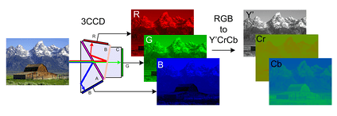

Основная статья: Компонентное видео
Оптическое изображение формируется с помощью объектива на светочувствительной матрице видео- и телевизионных камер, телекинопроекторов, цифровых фотоаппаратов, камерафонов или планшетов, веб-камер, камер систем видеонаблюдения и других подобных устройств. С помощью различных систем производится цветоделение изображения для получения монохромных полутоновых компонент трёх основных цветов.
 После применения гамма-коррекции сигналов R, G, B производится их преобразование для получения сигнала яркости Y' и двух цветоразностных сигналов: R'-Y' и B'-Y'. В соответствии с 601-й рекомендацией ITU-R применяется кодирование по следующим формулам для перевода компонентного видеосигнала в цифровую форму:

При передаче таких сигналов, возможно восстановление исходных составляющих цветов: красной (R), синей (B) и зелёной (G), которые используются в большинстве систем отображения видеоинформации, например в мониторах.
© Филиппенок Кирилл Сергеевич, 2020 (сайт)